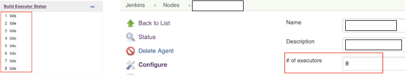
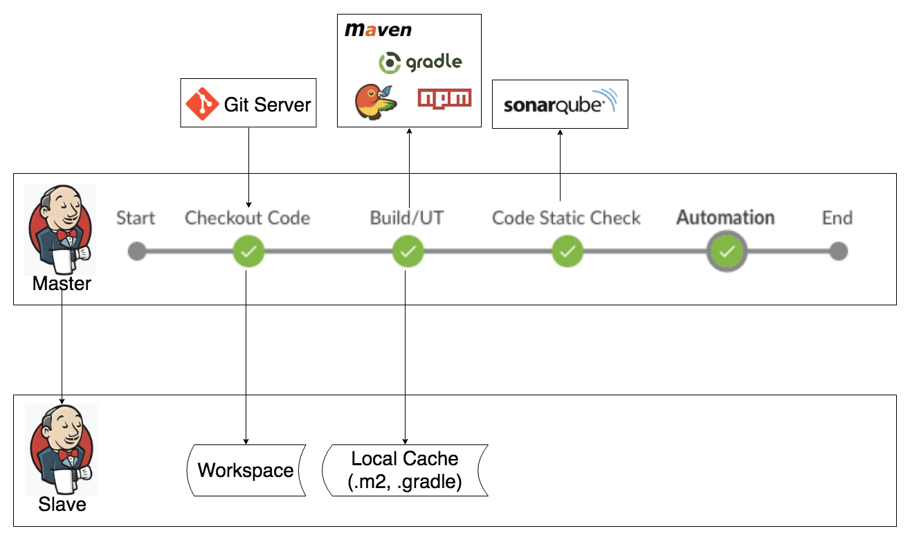
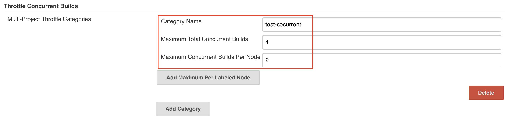
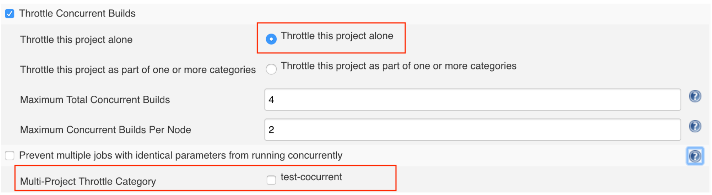

并发，多线程是程序设计领域老生常谈的问题，唯一的目的就是提高程序的执行效率-充分利用资源更快地处理多个计算请求。在持续集成、交付(CI/CD)领域同样存在着并发执行的需求。本文将主要介绍Jenkins Job的并发执行以及相关问题的探讨。其实不仅是Jenkins，任何一个持续集成(CI)服务器都应该支持CI Job的并发执行，其原因有以下两点：
- 充分利用Slave资源。如果让一台VM Slave一次只处理一个CI请求，往往会浪费很多的资源（CPU，Memory，Storage）。
- 持续集成的最佳实践要求快速地“Build Per Change Commit”，但是对于一些比较耗时的持续集成流水线，比如项目比较大，或者自动化测试的时间比较长，往往是前一个集成还没结束，新的change commit已经到来，如果不能并发执行，只能阻塞等待，导致commit的提交者不能及时得到反馈，从而使持续集成流水线在项目中失去了应有的作用，地位也会变得比较尴尬。此时，如果再一味地推进与持续集成流水线配套的一些策略，将会受到很大的阻力。
Jenkins Job缺省的并发行为
随着Jenkins Pipeline2.0的引入，目前主要有三种类型的Jenkins Job：Free Style Job，Scripted Pipeline and Declarative Pipeline。Scripted Pipeline and Declarative Pipeline属于Jenkins Pipeline2.0引入的Job类型，最大的优点就是Pipeline as Code，在一个Jenkinsfile文件里可以编写整个CI流程，并且可以提交到代码仓库，比如Git，作版本管理。由于Pipeline2.0突出的优点，目前越来越多的公司和组织开始使用它来构建持续集成和持续交付流水线，但是Free Style类型的Job目前还是主要支持的Job类型之一，没有被废弃掉，其原因可能有两个：1，并不是所有的插件都能够很好地支持Pipeline2.0（下一节的Throttle Concurrent Builds Plugin就是个例子）；2，不少公司或组织还有很多遗留的Free Style类型的Job，所以本文仍然会涉及这三个类型的Job。
为了支持Jenkins Job并发执行，首先需要设置Jenkins Slave的Build Executors的数量大于1：

当Jenkins Job有新的build请求时，只要匹配的Slave节点有空闲的Executor，即使已经有build在执行，新的build也会立刻被并发执行。如果匹配的Slave节点没有空闲的Executor，这个新的build请求将被放入待执行队列里等待调度。
Free Style Job缺省并没有打开并发执行的功能。需要在Job的配置中打开选项“Execute concurrent builds if necessary”：
Pipeline2.0的Job缺省是并发执行模式。如果要禁止并发执行，可以通过添加以下代码：
- Scripted Pipeline
在Jenkinsfile头部添加以下属性：
1 | properties( |
- Declarative Pipeline
在pipeline块中添加以下选项：
1 | pipeline { |
Jenkins Job并发执行需要解决的问题
Jenkins Job的并发执行是一把双刃剑，用得好，所向披靡，能够充分利用既有资源服务更多的持续集成请求，用得不好，会出现很多预料不到的问题，而且有些问题并不能重复出现，给调试带来了很大的负担。Jenkins Job的并发执行主要面临的问题是资源使用的冲突。下图是一个常见的基于Pipeline2.0实现的一个Jenkins CI Job(yunzai-ci)：
按照流程顺序，逐一分析如下：
在“Checkout Code”阶段，同一个Jenkins Job并发执行的build在同一个Slave上的Workspace会存在着冲突。对于这个问题，其实Jenkins已经提供了解决方案，细心的你一定会发现在Slave机子上同一个Job会存在着多个文件夹，比如“yunzai-ci”，“yunzai-ci@1”，“yunzai-ci@2”…，这就是同一个Job并发执行的build对应的不同的Workspace。Jenkins缺省是在Job的名字后面加上符号@和数字来命名不同的Workspace的，当并发执行的build数量大于Workspace的数量，Jenkins会根据命名规则自动创建一个新的Workspace，当并发执行的build数量小于Workspace数量，Jenkins会按顺序重用已有的Workspace。
Workspace的分隔符@可以在启动Jenkins master时设置Java系统属性“hudson.slaves.WorkspaceList”来改变。比如，“hudson.slaves.WorkspaceList=-”将Workspace的分隔符改为中划线。
Workspace的冲突解决了，但是又引入了一个潜在的效率问题。想象一下，如果项目的代码库比较大(几百兆，或者几个G)，那么在创建一个新的Workspace时，会重新从远处的代码仓库克隆代码，这将导致当前Jenkins job执行的时间被拉长。可以优化Jenkins Job，通过拷贝本地已有Workspace的代码来提升速度(Linux上可以使用Rsync，Window上可以使用Robocopy)，而不是直接从远程代码仓库去克隆代码。
在“Build/UT”阶段，会使用不同的自动构建工具和包管理工具，比如Maven, Gradle, Npm, Bower等等，构建出来的制品会上传到制品仓库(Artifactory或Nexus)。这里，自动构建工具的本地缓存，以及构建制品上传到制品仓库都可能存在冲突。比如Maven, 缺省的本地缓存是在当前用户的.m2目录下，Maven执行时会更新或者下载项目的依赖到本地缓存，或者安装当前构建的制品到本地缓存，当同一个Jenkins Job并发执行的build运行在同一个Jenkins Slave上时，会启动多个Maven进程同时执行，它们会下载同一个依赖包或者安装相同版本(Maven的snapshot版本或者其它原因导致两个build版本相同)的构建制品到到同一个缓存目录，这时就会经常出现写磁盘文件冲突的问题，而且这个问题不是每次都发生。当多个Maven进程同时上传相同版本的制品到制品仓库时，也会存在着冲突。
要解决这类型的冲突，需要具体情况，具体对待。对于Maven来说，可以通过属性”maven.repo.local”来为每个Maven进程指定不同的本地缓存目录，且保证每个Build的版本都是唯一的。这个解决方案同样存在着效率问题，每开一个新的Maven本地缓存目录都会增加build的执行时间，因为Maven要重新去下载项目的所有依赖，这时也可以通过拷贝本地已有的缓存目录来提升速度。在“Code Static Check”阶段，如果使用的是SonarQube，则不会产生冲突，因为每一个并发执行的build都会在SonarQube服务端产生一个独立的分析，所以不会相互干扰。但如果是其它的静态代码分析服务器，可能就需要具体情况，具体对待。
在“自动化测试”阶段，由于资源有限(自动化测试机器有限，而且执行自动化测试用例也需要一定的时间)，所以不一定能够服务于并发执行的多个build。这时可以增加自动化测试机器(虚拟机)，同时进行测试分级，抽取出部分重要的测试用例放到Jenkins Job中去执行以降低测试执行的时间。可以把全量测试降级为以天为单位，比如每晚取最新的build去执行全量测试，并给出测试报告。
不同公司或组织的持续集成流水线可能和上文描述的不相同，为了能够并发执行Jenkins Job，需要逐一分析和解决每个阶段可能出现的资源冲突问题。
Jenkins Job并发执行的精确控制(Throttle Concurrent Builds Plugin)
Jenkins Job缺省的并发行为是只要有足够可用的Jenkins Slave和Executor资源，启动的build数量是不限的。但实际情况是我们需要精确地控制某个Jenkins Job总的并发执行的build数量，同时也希望单个Jenkins Slave节点上同一个Jenkins Job并发执行的build数量，这样可以限制某个Jenkins Job的总体资源消耗，保证其它Jenkins Job也能均衡执行。借助于Jenkins插件“Throttle Concurrent Builds Plugin”可以达到这样的控制目的。“Throttle Concurrent Builds Plugin”支持系统级别的配置，也支持Job级别的配置：
系统级别的配置：
系统级别的配置可以设置一个并发执行的类别，不同的Jenkins Job可以引用这个类别。
“Maximum Total Courrent Builds”用来设置Jenkins Job最大的并发数量。
“Maximum Concurrent Builds Per Node”用来设置同一个Jenkins Job在同一个Slave节点上最大的并发数量。Free Style Job级别的配置：
在Job级别，可以选择“Throttle this project alone”，并且设置“Maximum Total Courrent Builds”和“Maximum Concurrent Builds Per Node”这两个值，也可以通过“Multi-Project Throttle Category”选择系统级别配置好的并发执行的类别。Scripted Pipeline只支持使用系统级别配置好的并发执行类别：
1
2
3
4throttle(['test-cocurrent']) {
node('xxxx') {
}
}对于Declarative Pipeline，目前“Throttle Concurrent Builds Plugin”还不支持，所以只能是前面讨论的缺省并发行为。
对于插件“Throttle Concurrent Builds Plugin”的详细用法，
可以参考插件的Wiki: https://wiki.jenkins.io/display/JENKINS/Throttle+Concurrent+Builds+Plugin和GitHub地址: https://github.com/jenkinsci/throttle-concurrent-builds-plugin。
Jenkins Job相同参数build的执行情况
所谓相同参数build，就是指同一个Jenkins Job以相同的参数触发多个build。不论是Jenkins Job并发执行，还是非并发执行，只要有符合Jenkins Job执行的Slave和Executor资源而且并发策略允许，所有被触发的build都会被立刻执行。但如果没有足够的执行资源，或者并发策略不允许，而且已经有build在待执行队列里等待的情况下，再次触发与等待的build参数相同的build，行为就会有些区别，总结如下：
| Job类型 | 并发执行 | 非并发执行 |
|---|---|---|
| Free Style Job | 相同参数的build只会加入到待执行队列一次 | 相同参数的build只会加入到待执行队列一次 |
| Scripted Pipeline | 相同参数的build会重复加入到待执行队列 | 相同参数的build只会加入到待执行队列一次 |
| Declarative Pipeline | 相同参数的build会重复加入到待执行队列 | 相同参数的build只会加入到待执行队列一次 |
以上是根据实测得到的结果，并没有任何官方文档提供详细的说明，所以随着Jenkins版本的升级，其行为有可能会变化。
容器作为Slave节点会让并发执行变得容易吗？
最近几年容器技术借助于Docker在IT领域里掀起了巨大的变革，容器编排平台Kubernetes的出现更是将容器化的应用推向高潮。在CI/CD领域也不例外，越来越多的组织开始尝试利用Docker容器作为CI Job执行的Slave节点，通过Kubernetes平台统一管理调度虚拟机资源，以期望更加细粒度地控制和使用计算资源。Docker容器作为Slave节点确实是实现了本地执行环境的隔离，但每次执行都会启动全新的容器，都得重新下载代码和构建工具的本地缓存，使得每次的构建都要花费更长的时间，所以还是要考虑如何提升效率。